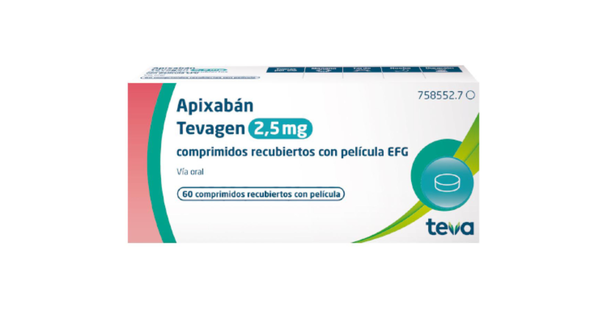
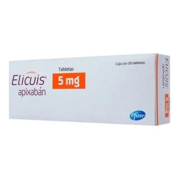

Apixabán
Los inhibidores del factor Xa son anticoagulantes orales directos que bloquean selectivamente al factor Xa, una enzima clave en la cascada de la coagulación. Su acción consiste en unirse de forma directa al sitio activo del factor Xa, impidiendo su capacidad para convertir la protrombina (factor II) en trombina (factor IIa). La trombina es esencial para transformar el fibrinógeno en fibrina, proteína estructural que forma la base de los coágulos sanguíneos. Al inhibir la generación de trombina, estos fármacos evitan la formación de fibrina y, por tanto, la formación de coágulos. Además, al reducir la producción de trombina, también disminuyen la activación de plaquetas, contribuyendo aún más al efecto anticoagulante.
Comprimidos/vía oral
Potenciadores del efecto:
Disminuyen su efecto:
Apixabán (Marca Tevagen) Apixabán (Marca ELICUIS)